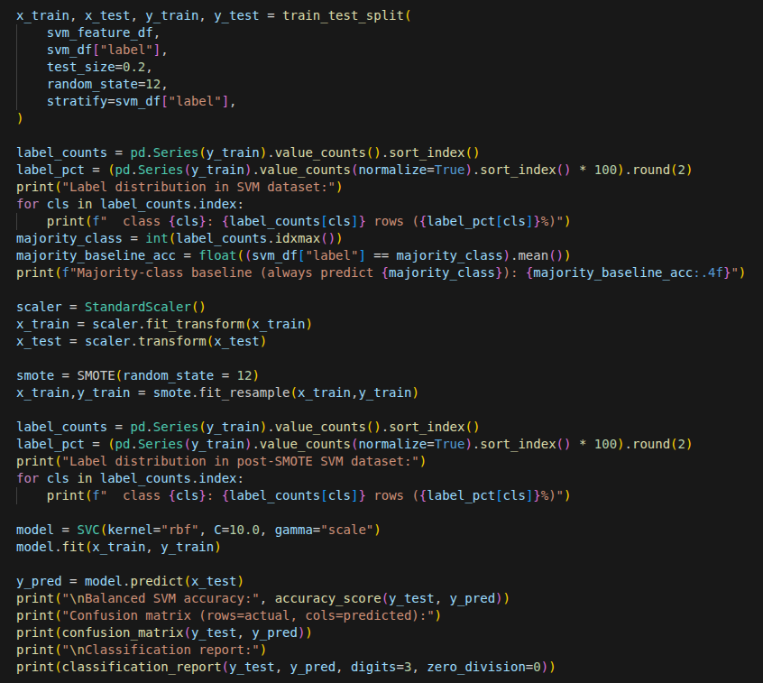

I am a fast learning Robotics Masters student at Georgia Tech with a background in mechanical engineering. I design and evaluate robust hardware and software solutions for autonomous problems, including mathematics based motion planning algorithms, novel mechanisms, and robust control methods. I have signifcant experience with CAD design, MATLAB programming, and Python software development, that I applied to automated clean-in-place skid design, competetive robotics, and TurtleBot3 maze navigation. I am passionate about applying my skills to shape the field of robotics.


Education
- Master of Science | Georgia Institute of Technology | August 2025 - May 2027 | GPA 3.7/4.0
- Bachelor of Science | Clemson University Honors College | August 2022 - May 2025 | GPA 3.95/4.0
Skills
Software
Autodesk Inventor, SolidWorks, MATLAB, Simulink, Microsoft Office, Abaqus, Python, Basic C++, ROS2, Ubuntu Linux, Bash, LT Spice, LaTeX
Technical Skills
Finite Element Analysis, Process Flow Diagrams, P&IDs, 3D Printing, Programming, Engineering Drawings, Product Testing, Ladder Logic, Perception/ Image Processing
Soft Skills
Collaborative Teamwork, Project Management, Communication, Research, Problem Solving
Experience
Graduate Assistant
Laboratory for Intelligent Decision and Robotics | August 2026 - Present- Focus on tactile sensing and teaching robots to learn by touch
- Deliver high quality research in a timely manner, and evaluate reigorously with abalation studyings and quantified results
- Train, deploy, and evaluate reinforcement learning action-conditioned policies
- Work spans various areas including loco-manipulation, gaussian splatting, sensor hardware, and physical hardware
- Looking to bridge the gap between humanoid robotics and contact rich manipulation tasks with tactile sensors
Grader - ME 6441
Georgia Institute of Technology | August 2026 - Present- Mentor students in graduate-level 3D rigid-body dynamics, providing guidance on coursework and conceptual questions.
- Organize and facilitate meetings and office hours to support student learning.
- Maintain a consistent grading schedule and provide timely feedback on assignments.
- Apply and maintain strong knowledge of graduate-level 3D rigid-body dynamics concepts.
Volunteer Researcher
Laboratory for Intelligent Decision and Robotics | December 2025 - August 2026- Contribute to multiple research projects within the Georgia Tech LIDAR Group focused on improving the generalizability, efficiency, and safety of humanoid robots.
- Work across robotic hardware, tactile sensing systems, and learning-based control pipelines for humanoid platforms.
- Collaborate on research spanning hardware development, sensor integration, data collection, and robot policy training.
- Contributed to a research project submitted to a robotics conference (CoRL) in 2026.
Undergraduate Researcher
Clemson University International Center for Automotive Research | May 2021 - August 2021- Developed an Android application leveraging deep learning for real-time road sign detection and user alerts.
- Designed and implemented an end-to-end mobile sensing pipeline to assist drivers and individuals with visual impairments.
- Applied computer vision and machine learning techniques to identify and classify road signs from camera input.
- Presented project results and demonstrated the application to peers, faculty, and industry professionals.
Lead Mechanical Designer
Clemson VEXU Robotics Club | August 2022 - May 2024
- Designed, manufactured, and evaluated functional robotic components, including powertrain gears and structural chassis supports.
- Designed and developed robotic subsystems, including chassis, end effectors, and launchers, to accomplish competition-specific tasks.
- Collaborated with programming and construction subteams to ensure designs were functional, manufacturable, and practical.
- Contributed to the team’s success in qualifying for the VEXU World Championships.
Extracurriculars
Armorer, Saber Team Coach
Clemson Fencing Club | August 2024 - May 2025- Managed maintenance and repair of all fencing equipment for a club of approximately fifty members.
- Troubleshot and repaired damaged fencing equipment using circuits and multimeters.
- Maintained an inventory system to track club-owned equipment, repairs, and purchase requests
- Coached the saber team, mentoring both new and experienced fencers to build competitive performance and club community.
Saber Squad Leader
Yellowjacket Fencing Club | January 2026 - Present- Oversee practice alongside fellow squad leaders for the club's saber squad.
- Advise team officers on competitive decisions and squad strategy.
- Coach and mentor new fencers, leading practice sessions on a regular basis.
Projects


 WT-UMI
WT-UMI
WT-UMI
As part of my research for the Georgia Tech LIDAR Group, I worked on a team researching tactile sensing and whole body manipulation. Together we developed a pipeline that enabeled humans to collect data that could be used to train a whole body manipulation planner policy driven by tactile sensor input. I worked predominantly on sensor hardware design and integration. We recently submitted to CoRL and are waiting on a response.



 Humor Predictor
Humor Predictor
Predicting Humor with Machine Learning
For the final project of my Machine Learning course I worked with four other students to apply machine learning to predict whether jokes would be viral. Using a dataset of one-million jokes from the r/jokes subreddit we applied SVM and logistic regression to help us make inferences on unseen jokes. While our final pipeline may have struggled, it was an interesting exploration into the limitations of natural language processing.
 Maze Solver
Maze Solver
ROS2 Autonomous Maze Solver
I spent some time working with a partner on a software package to solve a simple maze. We created a ROS2/Python package to solve the maze by using machine learning and ROS2 NAV2. A simple state machine controlled behaviors and PID controllers enabeled precise movements. Our final submission achieved 90% sign classification accuracy, and was able to complete the maze properly and without error in 5/6 tests.


 CIP Skid
CIP Skid
Fluor CIP Skid
I worked with a team of seven other Clemson ME students to design a Clean-In-Place Skid system in partnership with Fluor. I focused heavily on the conceptual design side of the project, doing much of my work in the areas of CAD design and thermodynamic calculations. I also acted as the Group Liason, ensuring useful and professional communcation with the Fluor sponsors and and Clemson advisors. Our final design came in second at a multi university showcase.


 VEXU Robot
VEXU Robot
VEXU Robot "Meowth"
This project is my most mechanically advanced project to date. I worked closely with my team and designed this over the course of an entire school year. It includes numerous subsystems, such as the drivetrain, the intake, the linear-launcher, and the winch release. Perhaps the highlight of the build is the winch release system. Conventional slipgear systems would not work, because multiple full revolutions were required to fully retract the linear launcher, so my team came up with a creative solution: a release arm that physically seperated the gears to avoid motor damage. The linear launcher system that my team and I developed gave the robot a near perfect disk grouping that minimized the number of missed disks, and qualified our team for the World Championships. See the VEX Robotics Spin Up game reveal for more information.